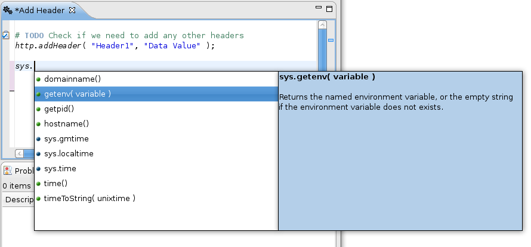

You can use the <CTRL>-<SPACE> key combination at any time to bring up a TrafficScript function hint. This will list all the available functions, with a brief Help tooltip for each as you scroll through the list. Selecting one of the functions will add it to your code at the current cursor position.
If the text you type corresponds to a known TrafficScript function, the text will appear in italics. As you type the period (.) that separates the parts of a function name, the TrafficScript function hint will automatically appear with the list of possible functions completions. Arguments to functions are highlighted in the hint as they are encountered.
Fig.1: An auto-completion hint